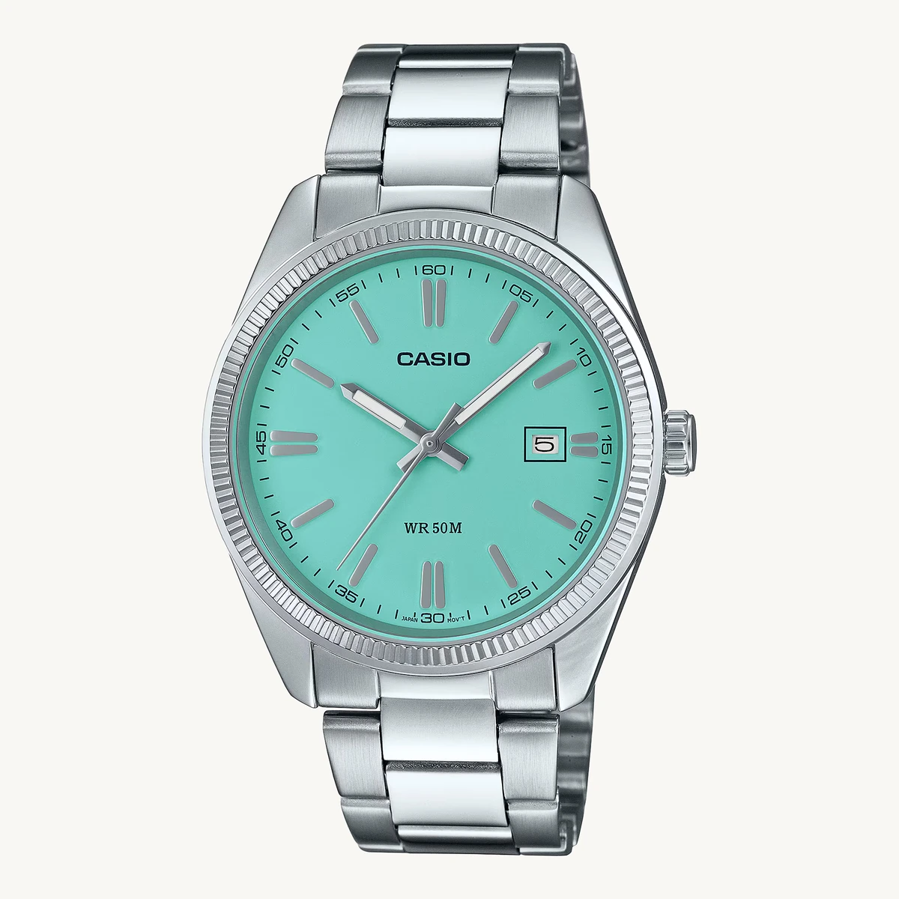
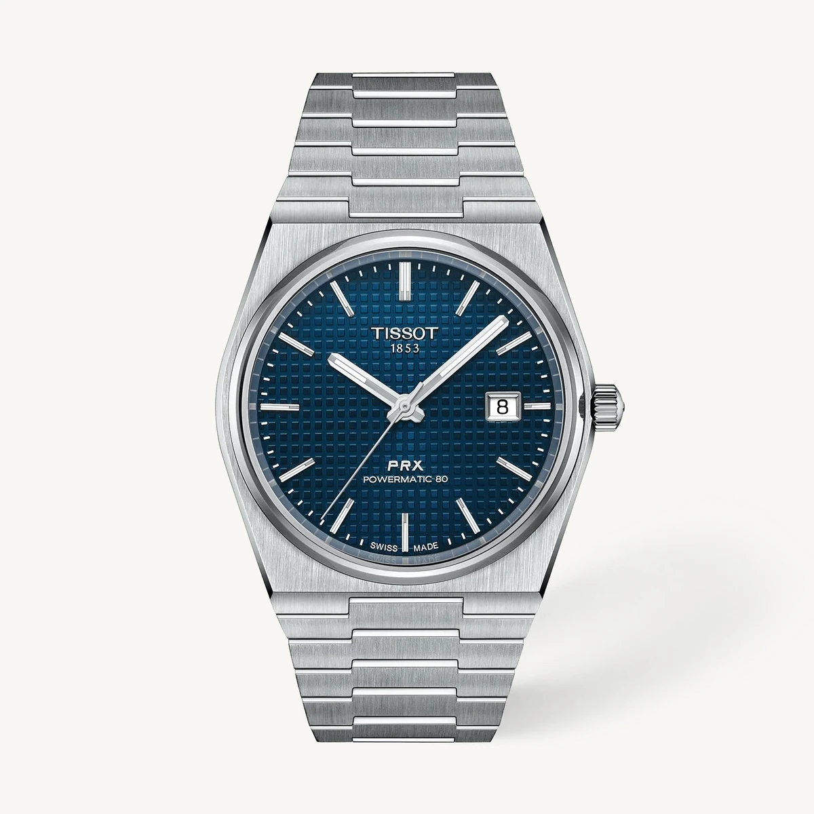
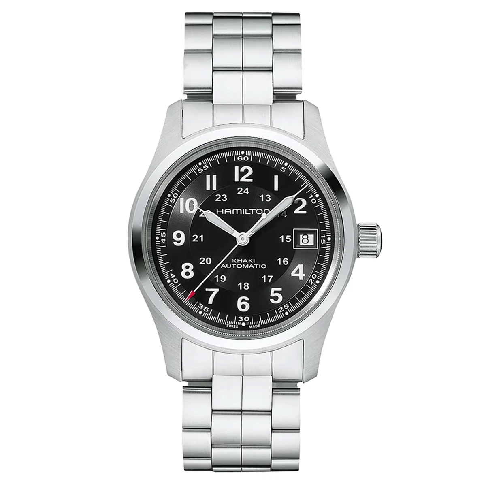

L’élégance simple
Casio MTP-1302
Un cadran bleu et un bracelet acier : une allure nette pour un budget contenu.
Voir la ficheLE GOÛT DES BELLES MONTRES, À TOUS LES PRIX
Une montre remarquable ne se mesure pas seulement à son prix. Découvrez des pièces élégantes à petit budget, des valeurs sûres et des modèles d’exception accessibles.
Une sélection indépendante. La vente directe est en préparation : seuls les modèles affichant un prix TTC et le bouton « Acheter sur Atelier Montres » pourront être commandés ici. Pour les liens partenaires : Achat, paiement et livraison chez le vendeur.
 LA PIÈCE SIGNATURE · CITIZEN TSUYOSADécouvrir
LA PIÈCE SIGNATURE · CITIZEN TSUYOSADécouvrir
Trois universDu premier achat à la belle pièce
52 références choisiesDes modèles précis, pas de montres génériques
Achat direct encadréOuverture uniquement après validation de l’offre
LA SÉLECTION · TROIS GAMMES
Pour un budget proche du SMIC, choisissez d’abord ce que vous souhaitez consacrer à votre montre. Nos repères aident à explorer, sans pousser à dépenser davantage.

Un vrai coup de cœur n’exige pas un gros salaire. Casio, SKMEI et designs bien pensés.
Voir les modèlesCitizen, Seiko, Orient : de belles finitions et des mouvements à découvrir.
Voir les modèles
Une Tissot ou une Hamilton pour marquer un moment important, sans viser le luxe inaccessible.
Voir les modèlesBudgets d’orientation, non prix de vente ni promesses de disponibilité. Prix, stock et livraison sont à confirmer pour chaque référence.
LE SHOWROOM
Accessible
Un cadran bleu et un bracelet acier : une allure nette pour un budget contenu.
Voir la fiche
Et pour des budgets encore plus serrés : découvrez aussi les modèles SKMEI et ADDIESDIVE dans le catalogue.
Intermédiaire
Un cadran vert profond et un bracelet intégré au dessin contemporain.
Voir la fiche
Une mécanique accessible à l’expression sportive affirmée.
Voir la ficheDes montres que l’on choisit pour leur design autant que pour leur mouvement.
Haut de gamme accessible
Acier intégré et cadran bleu texturé : une belle pièce à forte présence.
Voir la fiche
Une esthétique militaire raffinée et une mécanique suisse.
Voir la ficheUne sélection ambitieuse, sans faire croire qu’un prix élevé est indispensable.
Les photos montrent les références exactes documentées dans le catalogue. Cette galerie présente des idées de choix : les gammes indiquées ne constituent ni des offres au prix fixe, ni une promesse de stock. Un achat direct sur Atelier Montres ne s’affiche que lorsque l’offre et son prix TTC sont vérifiés.
Un choix plus simple
Pas besoin de connaître tous les mouvements ou toutes les références pour trouver votre style.
L’EXPÉRIENCE ATELIER MONTRES
Notre objectif est simple : lorsque la vente d’un modèle est ouverte, vous commandez auprès d’Atelier Montres. Nous gérons le paiement, le suivi et le service client ; notre fournisseur prépare ensuite l’expédition vers votre adresse.
Vous choisissez la montre exacte, sa variante et son prix total TTC affiché.
Vous passez commande auprès d’Atelier Montres ; le paiement est traité par notre prestataire sécurisé.
Après confirmation du paiement, le fournisseur reçoit la commande et livre à votre adresse. Vous retrouvez le suivi sur notre site.
Ouverture progressive : la caisse directe n’est pas encore active. Aucune montre n’est proposée au paiement sans vérification complète du fournisseur, du prix livré et des conditions de vente. Consulter les modalités d’achat
Notre approche
Une montre se choisit autant pour son esthétique que pour son mouvement, ses dimensions et son usage. Nous réunissons ces informations quand elles sont disponibles, et signalons les caractéristiques qui restent à confirmer.
Découvrir nos comparatifsQuestions fréquentes
Pour le moment, les nouvelles commandes directement sur Atelier Montres ne sont pas ouvertes. Vous pouvez consulter les fiches et, pour certains modèles, acheter séparément chez un vendeur partenaire. Seule une fiche portant un prix TTC vérifié et le bouton « Acheter sur Atelier Montres » permettra de commander auprès de nous.
Nous présentons des références de montres, pas un stock en temps réel. Vérifiez auprès du vendeur la disponibilité, la couleur, le prix final et le délai de livraison.
Notre conseiller de montres permet de filtrer selon la taille, le mouvement et votre style. Les dimensions absentes des sources ne sont pas inventées.
Certains liens, notamment vers Amazon.fr, sont des liens d'affiliation signalés. Cela ne change pas votre prix. En tant que Partenaire Amazon, je réalise un bénéfice sur les achats remplissant les conditions requises.
À vous de choisir